WordPress Dashboard
On the WordPress Dashboard you will find everything you need to post new pages, blog posts and edit the look and structure of your site.
Your portfolio site will include pages for navigation, basic information and organization as well as posts for individual projects.
Pages
Pages are static individual pages that usually contain navigation to other groups of pages.
The home page contains snippets of recent blog posts, while the about page has links to specific categories on the blog. The Page editor is very similar to the Post editor, but Pages will not be included in the blog feed.
There are two ways to create a new Page from the Dashboard:
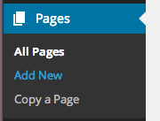 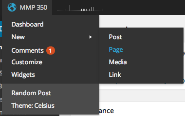Posts
Posts and pages are created in similar ways but serve different functions. Pages organize content, while posts contain the actual content. You can add projects you’ve worked on to posts and organize them with categories and tags. Those posts will then appear in your feed. The interface for creating and editing posts is the same as that for Pages, with a couple of important extra functions.
Categories are a useful way to organize content. A category page will display excerpts of all of the posts that are tagged with that category. You might have categories like: Web Design, Interactive, Fine Art, Game Design, or whatever other kinds of work you want to show on your portfolio.
Tags are another way to organize content by the content itself. You might add tags like HTML, CSS, JavaScript, PHP, Design, Graphics, Motion, BMCC, or other tags to describe the content in your posts. This will make it easy for readers of your portfolio to see what kind of work you have done.
Media Library
The WordPress media library will store all of the images, videos and sound you upload to your blog. You can upload new media either by using the link to the Media Library in the Dashboard, or by simply dragging and dropping images and other media directly onto your blog post.
General Settings
Take a moment to look at the general settings for you blog. You can change the site title and the formatting for displaying information like the date and time of posts.
Reading Settings
The reading settings contain organization that the blog reader or user will see, like the number of posts.
Writing Settings
Writing settings will effect the CMS and has some short cuts you can use for your own blog posts.
Excerpt
Excerpts are short descriptions or introductions to pieces that can be viewed on the portfolio category pages where many projects are shown in one grid.
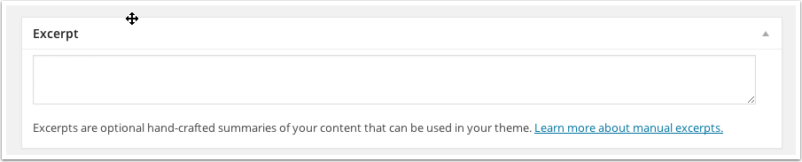Featured Image
The featured image is one image that represents a project or art work that can be used in a grid layout of work, a slideshow, thumbnails or other summaries of the categories in a portfolio. These can be added to Pages or Posts.
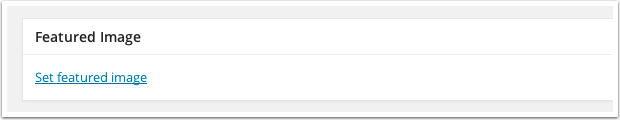Appearance Menu
The Appearance Menu contains many important options that include functionality like menus and widgets. Take some time to explore the appearance menu and see what kinds of widgets are available. You can also change the header for the site and background.
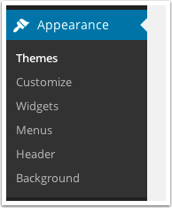Widgets
WordPress comes with some default widgets, and more can be downloaded from the Plugins section. Widgets include special menus, site statistics, calendars, archive and other ways of interacting with the content on your blog. They can be added to the sidebar or footer of the site, and in WordPress.org we will be able to customize where they appear.
Menus
Menus are very important for navigation of the WordPress site. You can add and customize the menu depending on how you want the user to experience the site.
We can use the Menu options to add a link to Class Notes on the class blog:
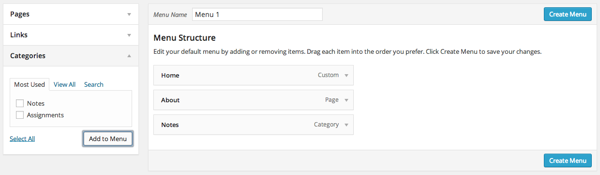You can also edit the menu locations on your site:

Links
Many sites feature a list of links to other sites or blogs. This can be a nice option, but is not necessary for a portfolio.
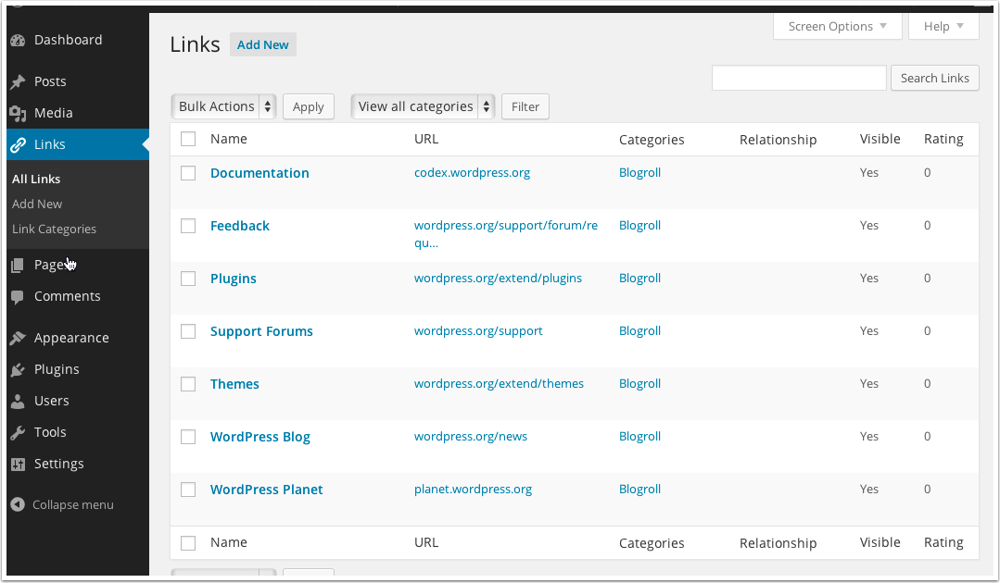Comments
It's not typcial to see comments on a portfolio site, but it is an options you can enable for WordPress, under Settings > Discussion.
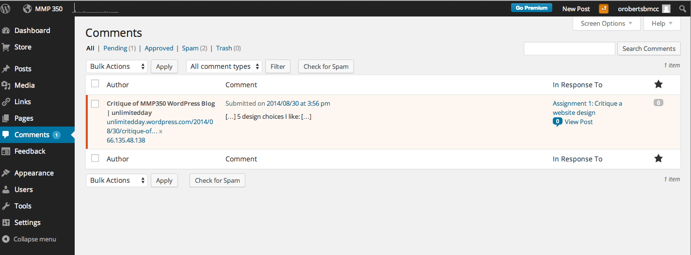Try these options on your blog, and we will continue to look at other options throughout the semester .
Themes
Today we're going to start developing our WordPress.org themes using the content from the Portfolios we made over the last several weeks. We'll start by introducing some basics of developing using WordPress.org and then looking at the basic theme files we will use.
WordPress themes do several things for our blogs/websites:
- Aesthetic: Establish basic styles for the site.
- Content: Scripting determines what content shows up on our pages and posts.
- Navigation: Placement and functionality of menus is determined by the theme and added menus and widgets.
Lets take a look at the basic structure of the WordPress files located on our computers (these files are mirrored on the BMCC server).
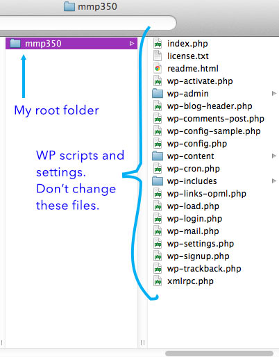The root folder of the WP installation contains script files and setting that we do not want to change. We will edit the theme file inside of wp-content.
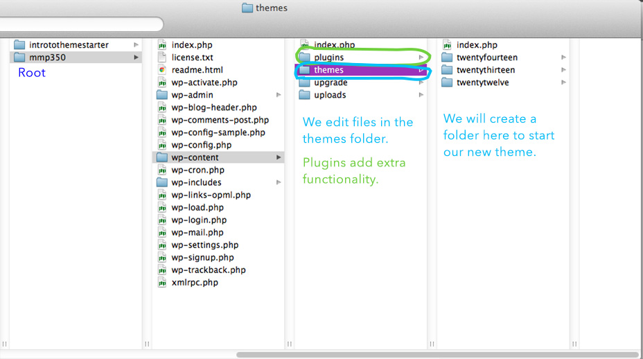We'll start by creating a new folder in the themes folder and add the files from the Theme Starter archive, which you can download here:
ThemeStarter.zipBefore we start editing our files, let’s go over the structure behind a WP website:
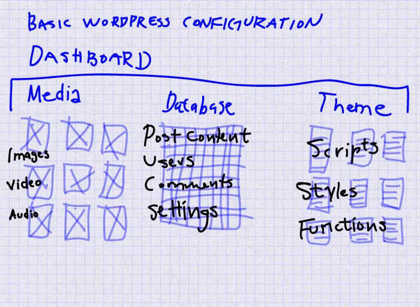Let's look at how this structure is used to create a page:
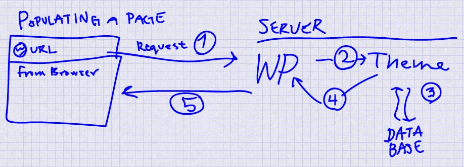WordPress is a collection of files that separate the content and functionality of a website allowing us to make dynamic pages that combine HTML, CSS and media from different sources into one place. This mean that we can create new posts simply by filling out the basic content like the title and text of a blog post or website page and allow WordPress to do the work of creating the HTML and CSS framework that is used to display the page in a browser. When a user makes a request for the website using the URL in a browser, that request is fed into the WordPress system, which then routes through the structure established in our theme, which grabs the needed content from the database, and send it back to the browser through WP, rendering the page for the user.
To begin creating our own theme, we must add a directory (folder) to the theme folder on WP. The most basic theme requires index.php and style.css to work (make sure that you start with the example files, because WordPress requires the syntax of the files to read as correct HTML and CSS, and that the CSS page have an author comment before it can be recognized as a theme):
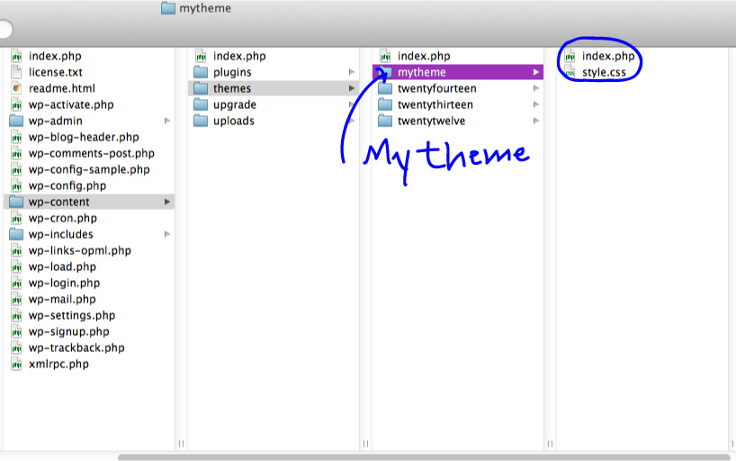Once you have created these files, you can upload them via Filezilla.
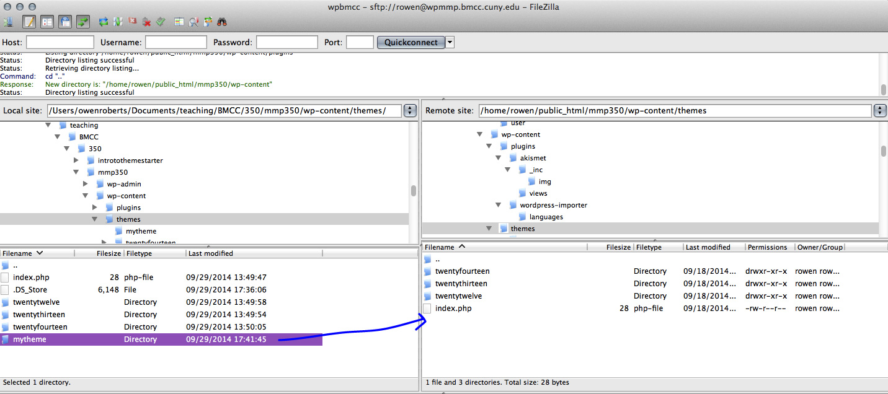Once it is uploaded, you will see the option to activate your theme in your Dashboard theme window. Click the button to activate your theme.
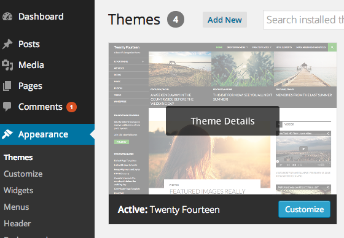When your refresh your browser you will see the new theme in place.
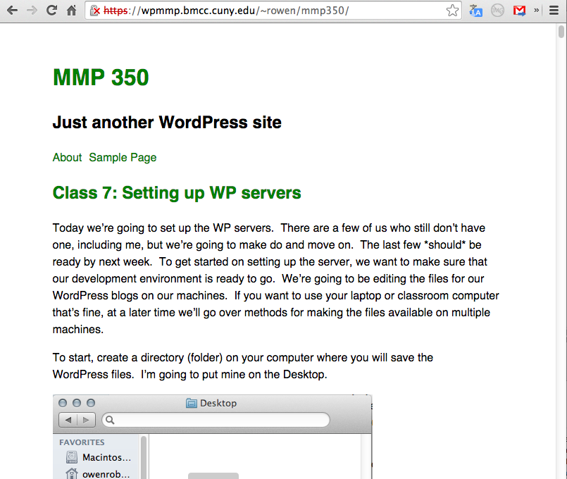Don't worry if your theme seems simplistic or is missing the functionality you had on your WordPress.com blog. We are going to work on these themes to make them even better than the themes we chose before.